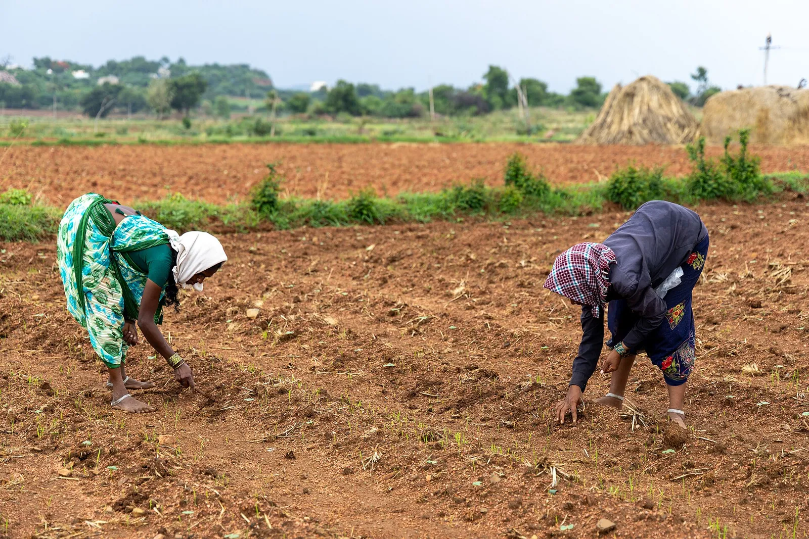

A seed comes up when a few things line up: soil in its germination range, steady moisture, and for some seeds a dormancy broken first or a glimpse of light. Here is what each kind asks for, and why.

Photo: Vraj Acharya, WELL Labs · CC BY-SA 4.0, via Wikimedia Commons.
What you need
Your last frost date, which sorts the cool-season crops from the warm-season ones
A soil thermometer, so you read the ground instead of guessing from the calendar
The seed packet or the plant’s page, for its germination range and any pre-sow treatment
Half of “my seeds didn’t come up” is timing and depth, and the seed was fine. A seed carries a packed lunch, the food to make a seedling, and waits for the right signal to spend it. Give it the conditions it’s waiting for and it comes up. Miss them and it sits, rots, or exhausts itself reaching for a light it can’t find. Here are the common signals and how to give each one.
When is the soil ready to sow into?
The most useful habit is to sow by the soil temperature instead of the date. Every kind of seed has a soil-temperature range it germinates in, and the calendar is only a rough proxy for it:
A seed comes up from the warmth of the soil, not from a date on the calendar. Each kind of seed has a soil-temperature range it germinates in; sown into ground colder than that range it comes up slowly and patchily or rots before it can emerge, and ground hotter than the range stalls it too.
If you skip this, it still grows, just less well. The planner suggests it.
How it works: Germination is driven by temperature-dependent enzymes that mobilise the seed's stored reserves, so in soil below the species' range those enzymes work too slowly for the seedling to emerge before soil fungi rot the water-swollen seed, and in soil above the range that same enzyme machinery is suppressed. That is why the soil's own temperature is the reliable signal, and the day of the year is not.
Evidence: checked against 2 sources in the research-based literature.
In our rapidly changing climate, a calendar date is not the best predictor for an extra early onset of spring weather in March or an extremely late, cold and wet April
Remedy
Read the soil to know when to sow. A soil thermometer pushed to sowing depth for a minute gives the number. Sow each crop once the soil sits in its germination range (warm-season crops wait for warm ground even after the frost has passed, and cool-season crops go into cool soil on purpose), or start seed in a warm flat indoors and set the young plants out. Each plant's own range is on its page.
A soil thermometer pushed to sowing depth for a minute settles it. Warm-season crops such as beans, squash, cucumbers and corn want warm ground, and they will sulk or rot in cold soil even after the frost has passed. Going by the frost date alone leads you straight into that mistake. Cool-season crops are the mirror image: lettuce, peas, spinach and radishes germinate in cool soil and are sown early on purpose. Each plant’s own range is on its page, so you can check the ground against the number.
Why won't some seed come up straight from the packet?
Most vegetable seed will germinate as soon as it’s warm and damp. But some seed, including a lot of perennials, wildflowers and hard-coated natives, carries a built-in dormancy that has to be broken before it will do anything at all. That step takes time you have to plan for:
Some seed will not germinate straight from the packet. It carries a built-in dormancy that a pre-sow treatment has to break first. A hard-coated seed is scarified or soaked so water can get in; a seed with internal dormancy is cold-moist stratified (chilled damp for weeks) before it will come up. The treatment has to be started far enough ahead of the sowing date to finish in time.
If you skip this, it still grows, just less well. The planner suggests it.
How it works: A hard, water-impermeable seed coat holds the seed dormant by blocking imbibition, so nicking, abrading, or soaking the coat is what lets water reach the embryo; a seed with physiological dormancy stays shut until a period of cold, moist chilling lets its germination-inhibiting hormones dissipate. So each treatment takes its own span of time, and starting it late leaves the seed still dormant at sowing.
Evidence: checked against 2 sources in the research-based literature.
A tough seed coat prevents water uptake and seed germination
Remedy
Check the plant's page for the treatment it needs. Scarifying (nick, abrade, or a hot-water/acid treatment) and soaking are done right before sowing; cold-moist stratification takes weeks, so start it well ahead. About six weeks before the intended sowing date is a safe general lead, though the exact period is species-specific and is on each plant's page. Fall-sowing outdoors lets winter do the chilling for hardy natives.
The two kinds of dormancy call for two different treatments. A hard, water-tight seed coat is dealt with just before sowing: nick it, rub it on sandpaper, or soak it so water can finally get in. Internal dormancy is slower. The seed needs weeks of cold, damp chilling (“stratification”) before it will respond to warmth, so if a packet says to stratify, start it well ahead of when you mean to sow, or sow in autumn and let the winter do it. The plant’s page carries the exact treatment and how long.
Which seeds should I not bury?
Depth has a twist that trips people up. A handful of seeds need light to germinate, so the usual “cover it up” instruction is wrong for them.
A few kinds of seed need light to germinate, and burying them stops them coming up. Sow these on the surface, pressed into firm, moist soil and left uncovered or barely dusted over. Don't sow them at the depth a larger seed would take.
If you skip this, it still grows, just less well. The planner suggests it.
How it works: These seeds carry the light-sensing pigment phytochrome, which must catch light to switch on the hormone cascade that releases the seed to germinate, so a seed buried past a few millimeters sits in the dark with that switch never thrown and stays dormant.
Evidence: checked against 1 source in the research-based literature.
When sowing light-requiring seeds, sow them on the soil surface
Remedy
Press light-requiring seed onto firmed, moist soil or medium and leave it uncovered or only barely dusted, then keep the surface damp. A seed sitting on top dries out fast, and a fine mist keeps it in place better than a heavy watering. The plant's page says whether it needs light; a seed that needs darkness is the opposite and is covered as usual.
These you press onto firm, moist soil and leave uncovered or barely dusted, then keep the surface damp with a light mist, because a seed sitting on top dries out fast. The plant’s page tells you which way a seed goes; most seeds are the ordinary kind and are covered as usual, and a few, like basil, want darkness and must be covered.
How deep should I sow, and does old seed still work?
For every other seed, depth is a simple rule of thumb: sow about two to three times the seed’s own width. A big bean goes down a good inch; a fine carrot or lettuce seed is barely covered. Too deep and a small seed spends its whole packed lunch reaching upward and never breaks the surface. It’s the same failure as burying a light-lover, by a different route.
Think about the age of your seed too. Seed doesn’t keep forever, and how long it stays worth sowing varies a lot by crop. Onion and parsnip fade within a year or two, while squash and tomato can keep for several. Where the corpus knows a crop’s storage life it’s on the plant’s page. If you’re unsure, a quick test settles it: fold ten seeds into a damp paper towel, keep it warm for a week or two, and count how many sprout. That’s your rough germination rate, and it tells you whether to sow thicker or buy fresh.
Further reading
Good places to read more about the technique on this page. The grade on each card comes from that card’s own sources.